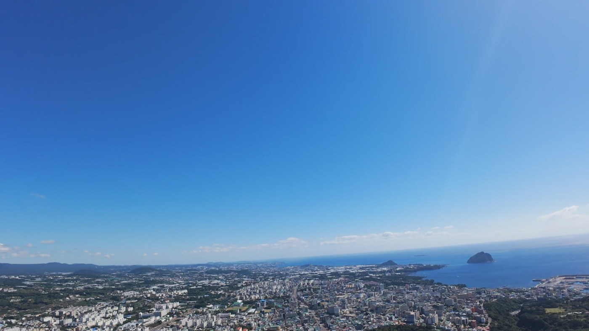
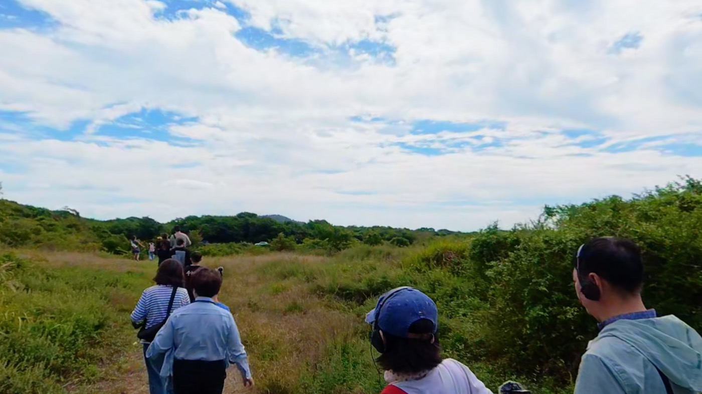
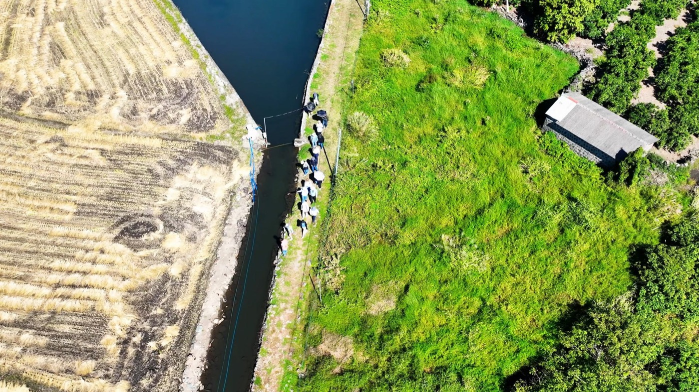
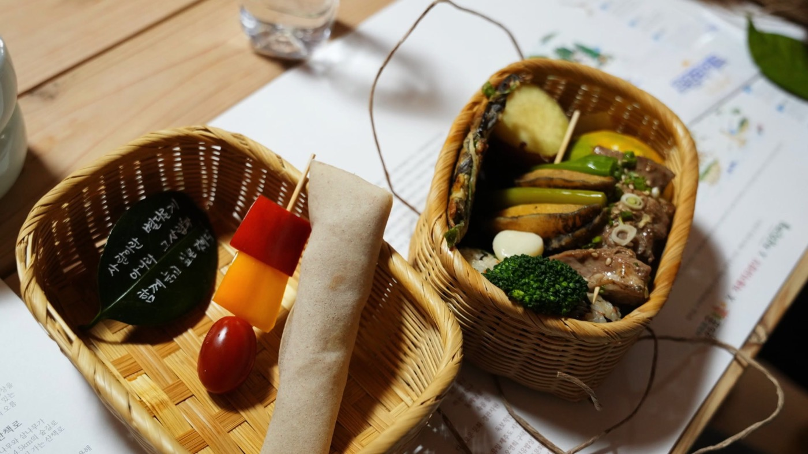
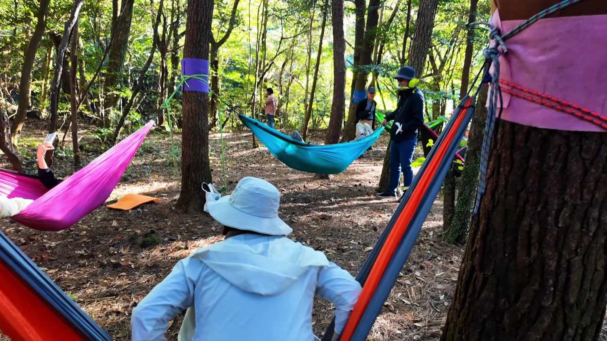
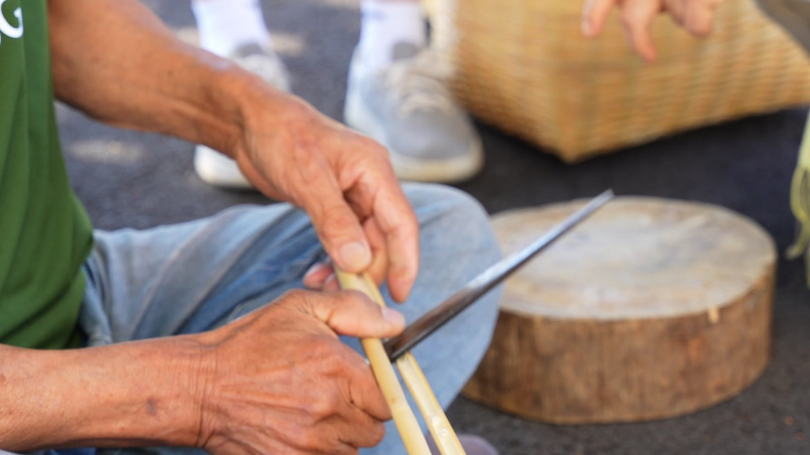
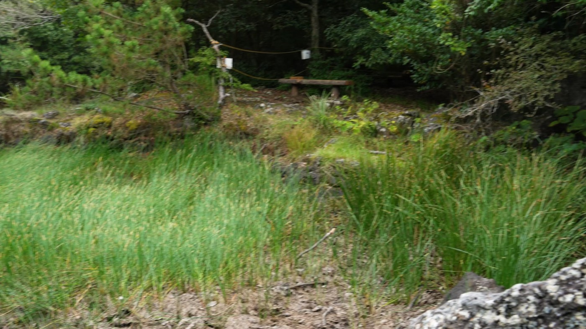

What is ecotourism
생태관광이란
환경보전과 지역주민의 복지 향상을 위하여 자연지역으로 떠나는 책임여행입니다.
Keywords
네 가지 열쇠말
환경보전
지역주민
자연지역
책임여행
세 가지 목표
- 환경보전
- 지역경제 향상
- 사회교육적 의미
For travelers
여행자가 지킬 다섯 가지 원칙

원칙 1
교통 · 탄소 배출을 줄이는 이동

원칙 2
숙박 · 주민이 운영하는 작은 숙소

원칙 3
식사 · 재료가 어디서 어떻게 왔는지 묻기

원칙 4
재미와 힐링 · 생태관광도 즐겁고 여유롭게

원칙 5
상품 · 내 소비가 누구에게 도움이 되는지
Cautions
생태관광에서 주의할 일곱 가지
- 1생태계 보전
- 2주민 주도
- 3주민의 삶과 문화 존중
- 4관광객의 보전 참여
- 5환경교육적 해설
- 6경제와 보전의 선순환
- 7지속가능성

조금씩 길게 오래 여럿이 경제활동을 하고 그리고 자연환경 보전을 하면서 인간과 자연이 같이 살아가는 지속가능성을 확보해야 될 것 같습니다.(사)제주생태관광협회 협회장 고제량 · 영상 16:05 구간
Governance
주민이 이끄는 협의체
생태관광지역은 주민 주도를 위해 협의체를 꾸려 기획하고 진행합니다. 행정 담당자, 지역주민, 지역 환경활동가, 전문가, 협력 기업과 단체가 함께 민주적 의사결정으로 정하고 실천합니다.
확인 필요인터뷰에는 생태관광지역 40곳, 2026년 4곳 추가 지정 계획, 2013년 자연환경보전법, 협의체 15~25명이 나옵니다. 공식 자료로 확인하지 못해 본문에 넣지 않았습니다.

Interview
고제량 협회장 인터뷰
고제량 협회장이 생태관광의 정의와 목표, 한국의 생태관광지역 제도, 여행자가 지킬 다섯 가지 원칙과 주의할 일곱 가지를 이야기합니다. 2026년 10월 제주에서 기록했습니다.
아무리 세련된 생태관광 프로그램이라 할지라도 주민이 주도하지 않으면 사실은 생태관광이라고 할 수 없다고 생각을 합니다.영상 13:18 구간
우리는 왔다 가는 손님으로만 머물 게 아니라 그 지역을 여행한 어떤 참여자의 마음으로 그 지역의 생태계를 보전하는 역할을 이어가야 될 것 같아요.영상 14:23 구간
생태관광이라 할지라도 최대한 재미있게 그리고 최대한 여유롭고 치유가 되고 힐링이 되게 그러한 여행을 만들어야 됩니다.영상 10:14 구간
확인 필요유튜브 영상은 일부 공개 상태입니다. 공개 범위와 사진 속 인물 동의를 확인해 주세요. 영상 화면에는 인터뷰 당시 직함이 나옵니다.